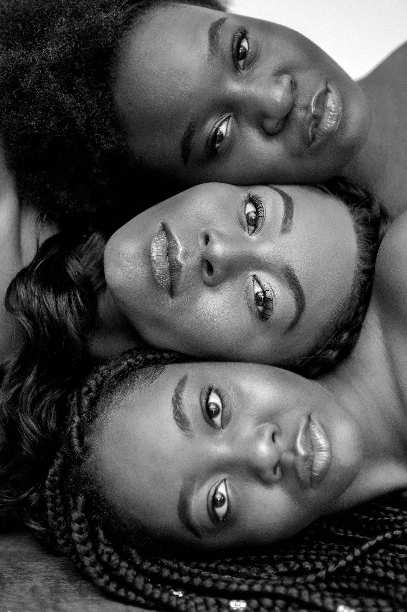

From centuries, Black Women have not only suffers from patriarchat but also racism, sexism, objetification, fetishism. But just imagine another layer was added , she is an immigrant.
The intersectional nature of African immigrants, being both Black and foreign, makes them particularly vulnerable and subject to invisibility in the United States immigration debate. As a result, policies that have historically aided their immigration.
Learn more →Colorism is discrimination or prejudice based on the shade of a person’s skin, often favoring people with lighter skin over people with darker skin. Although colorism can affect people of many racial and ethnic backgrounds, it has a particular history within Black communities and can influence how Black people are perceived and treated.
Colorism can affect how Black women see themselves and how others perceive them. In romantic relationships, it can influence ideas about beauty, attractiveness, desirability, and who is considered a “preferred” partner. Research on Black women’s dating experiences has found that skin tone can shape romantic experiences in different ways. Darker-skinned Black women may experience romantic rejection or feel overlooked, while lighter-skinned women can also experience fetishization or uncertainty about whether they are being valued for who they are rather than their appearance.
Every women carries a story, some are rarely heard.
Black & Beyond is a space where Black Women and Black Immigrants share their experiences and discover stories they relate to.